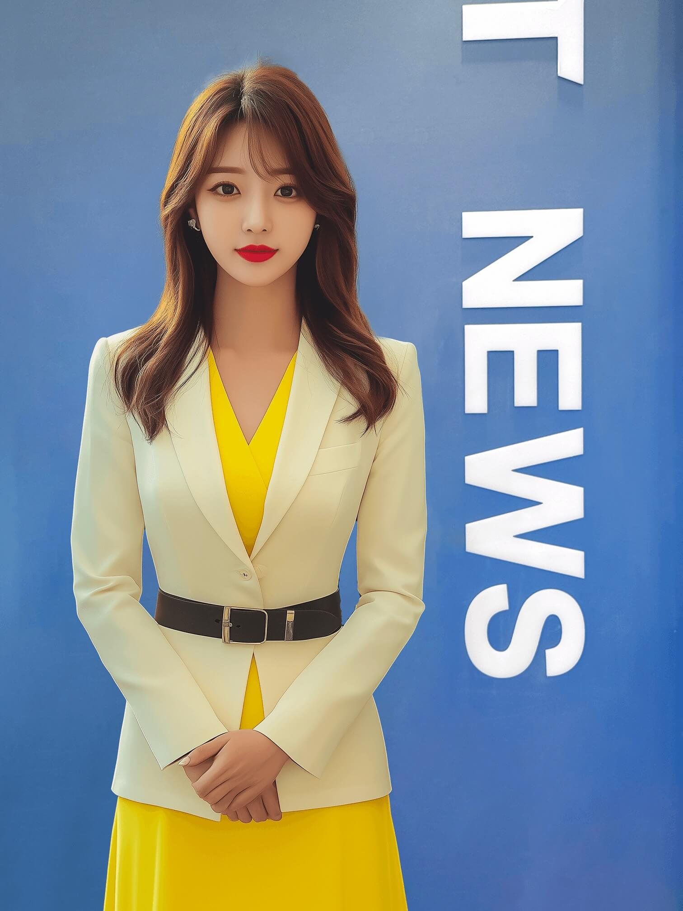
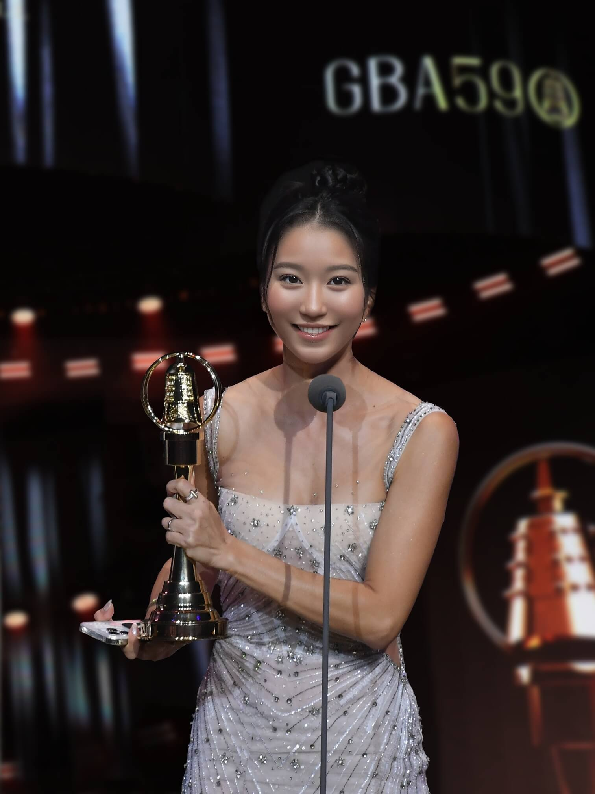

AI 換臉範例展示
看看 AI 換臉的神奇效果，了解如何使用臉部編號功能
📸 單人照片換臉

→
→

最簡單的情況：你的照片只有一張臉，模板也只有一張臉。
設定：來源臉部編號 = 1，目標臉部編號 = 1
設定：來源臉部編號 = 1，目標臉部編號 = 1
👥 多人照片換臉

→

→

當你的照片有多人時，可以選擇要換哪一張臉。
設定：來源臉部編號 = 2（右邊的人），目標臉部編號 = 1
設定：來源臉部編號 = 2（右邊的人），目標臉部編號 = 1
🎭 模板多人選擇

→

→

當模板有多人時，可以選擇要替換哪一張臉。
設定：來源臉部編號 = 1，目標臉部編號 = 3（右邊的人）
設定：來源臉部編號 = 1，目標臉部編號 = 3（右邊的人）
👨👩👧👦 複雜多人場景

→

→

處理複雜的多人場景，精確選擇要換的臉部。
設定：來源臉部編號 = 2（家庭照中的媽媽），目標臉部編號 = 1
設定：來源臉部編號 = 2（家庭照中的媽媽），目標臉部編號 = 1
💡 使用技巧
- 臉部編號順序：系統會從左到右、從上到下自動編號臉部
- 清晰度很重要：上傳清晰的正面照片，效果會更好
- 多試幾次：如果效果不理想，可以調整臉部編號重新嘗試
- 支援最多 20 張臉：可以處理大型團體照片
- 自訂模板：除了預設模板，也可以上傳自己的模板圖片
- 下載高品質：處理完成後可以下載高品質的結果圖片